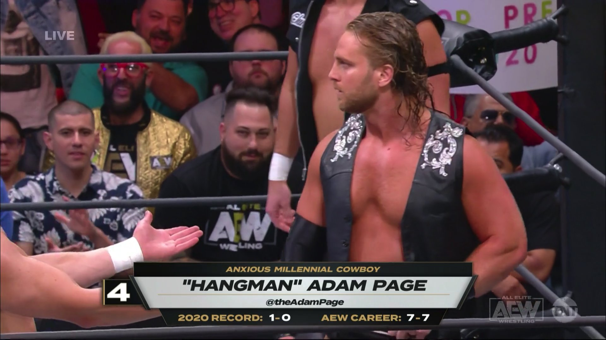

My favorite hobby, that I am always embarrassed to talk about, is watching professional wrestling. I grew up watching it as a kid and stopped once I got a little older . I started watching old matches from my childhood recently and got back into watching new stuff again. There is great wrestling on the indies, as well as big new companies doing really interesting stuff. There are also a lot of international companies in Japan and Mexico that do great stuff as well.
The reason I like watching it is because of the storytelling. There are really good stories of triumph and trials. Really good stories of friendship and betrayal. There are emotional stories of not feeling good enough and feeling alone. There are stories told in the ring through the athleticism, acrobatics, and physical acting!
There are also stories being told between companies now. The "Forbidden door” that had been shut for years has been opened. Excluding the largest company out there, pretty much every other company is working with another and letting their performers be at whatever show they wish to tell their story. It is really similar to how the Marvel cinematic universe has become! This style of storytelling goes way back to the early popularity of wrestling. There are performers returning after years of quitting that had become disillusioned with the whole idea of professional wrestling. There are less scripts, less silliness, and more creativity. Right now is the best time to be a fan of professional wrestling in my opinion.
{kind=link}
{kind=link}
{kind=link}